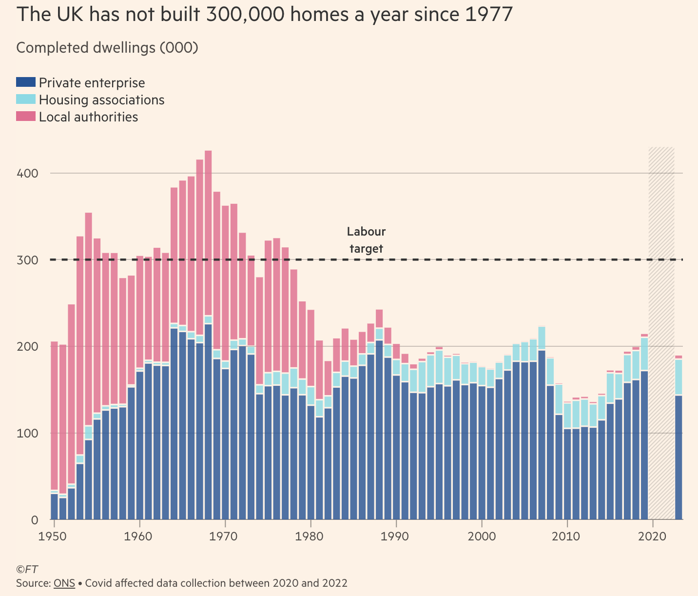
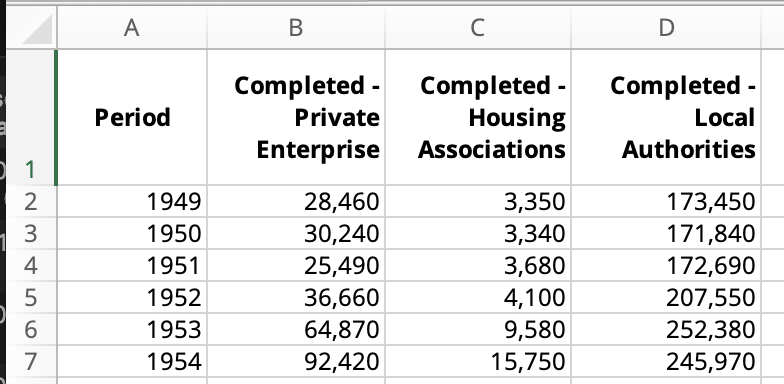
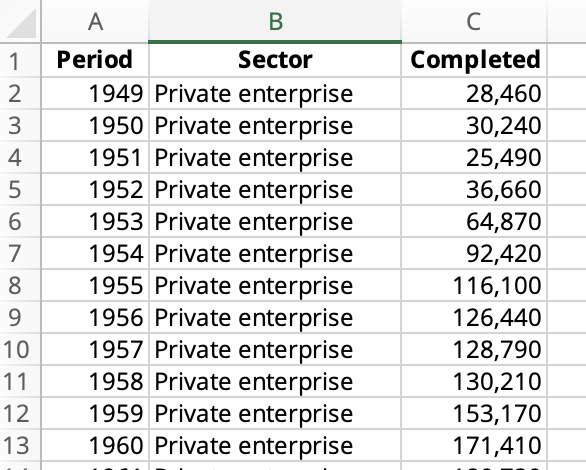
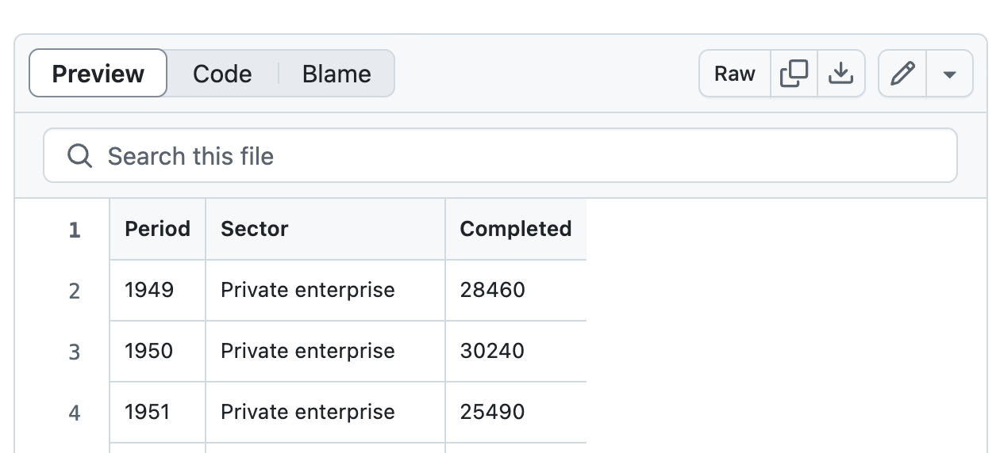
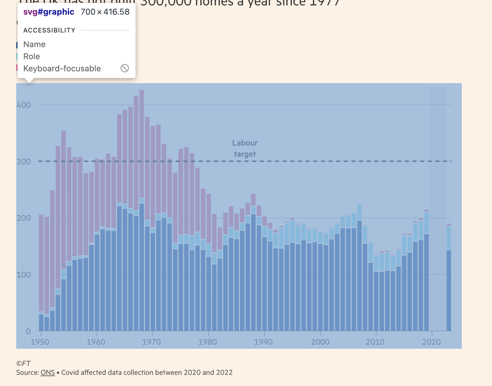
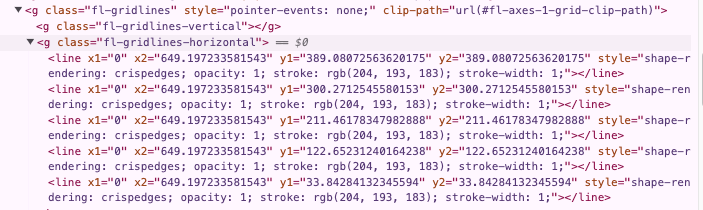
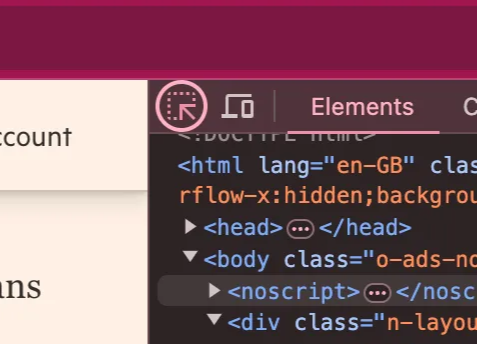
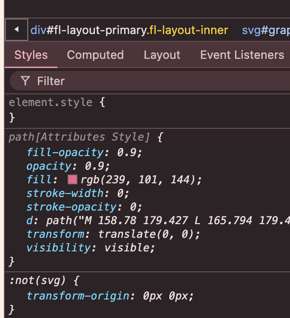
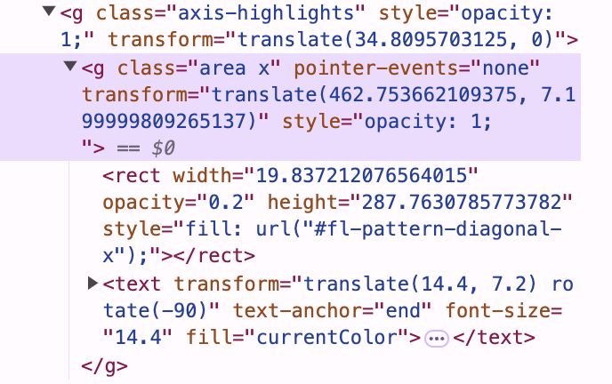

Copying a chart you admire is one of the fastest ways to learn a charting tool. Every detail you notice in the original (a lighter grid line, a legend in an odd place, a gap in the data) becomes a question: which property controls that?
The FT chart above is a good first target. It is a stacked bar chart, the kind of chart Vega-Lite makes by default, but it adds a reference line, a label, a shaded period of missing data and the FT's house style. By the end we will have a chart that is hard to tell apart from the original.
The main quantity (homes built) is shown by position along a common scale, the most accurate channel in Mackinlay's ranking. Sector is a nominal variable, so it gets hue, which Bertin calls selective: you can pick out one sector at a glance. Everything else is kept quiet so the data stands out.
How to use this page
- Each step shows what changes, the chart it makes, and the full code (click to expand).
- Use the switch in the sidebar to show code in Vega-Lite (JSON) or Altair (Python). Both produce the same chart.
- Open any chart in the Vega Editor from its … menu and try changing values. The Altair scripts run as they are in Google Colab.
The steps follow the grammar of graphics: data, then marks and encodings, then scales and guides (axes and legends), then extra layers. Vega-Lite specs are built in the same order, which is why each step only touches one part of the spec.
Step 0Get the data
The FT credits the ONS, so we start there. The dataset is
House
building, UK: permanent dwellings started and completed. Download the Excel file and open
the Contents sheet. The table we want is 3a: dwellings completed by
sector, United Kingdom, by calendar year.
In Excel
- The FT shows completed homes, so ignore the columns for homes started.
- Copy
Periodand the threeCompletedsector columns to a new sheet. Leave out the total: the stacked bars add up to it anyway.

- Stack the three sector columns on top of each other, so the sheet has three columns:
Period,SectorandCompleted. - Set the number format of
Completedto General, so the CSV has no thousands separators, then save the sheet as CSV.

Vega-Lite maps columns to visual channels. With a single Sector column
we can write "color": {"field": "Sector"} and get one colour per sector. In wide
format there is no single field to point at.
Or in Python
The same steps in pandas. The full script is
prepare_data.py;
the key step is melt, which turns wide data into long.
# Table 3a has five rows of notes above the column headings
wide = pd.read_excel(io.BytesIO(response.content), sheet_name="3a", skiprows=5)
wide = wide[["Period", "Completed - Private Enterprise",
"Completed - Housing Associations", "Completed - Local Authorities"]]
wide.columns = ["Period", "Private enterprise", "Housing associations", "Local authorities"]
# Stack the three sector columns into one 'Sector' column
long = wide.melt(id_vars="Period", var_name="Sector", value_name="Completed")
# ONS marks missing years with '[x2]'. Turn these into blanks so Vega-Lite skips them.
long["Completed"] = pd.to_numeric(long["Completed"], errors="coerce").astype("Int64")
long.to_csv("ons_housebuilding_uk_long.csv", index=False)Host the file
A chart on a website needs the data at a URL. Commit the CSV to a public GitHub repository, open it, and click Raw. The address of that page is the URL to use.

The ONS revises recent years and has added 2024 and 2025 since the FT published. This page uses a copy downloaded in 2024 that matches the FT chart. Going further shows the chart with the latest data.
Step 1Start from an example
Few people write a spec from a blank page. Open the simple bar chart from the Vega-Lite example gallery, then make two changes:
- Replace the inline
valuesindatawith aurlpointing to our CSV. - Change the field names in
encodingto match our columns:Periodon the x-axis andCompletedon the y-axis.
{
"$schema": "https://vega.github.io/schema/vega-lite/v6.json",
"data": {
"url": "https://raw.githubusercontent.com/jhellingsdata/jhellingsdata.github.io/main/Data/ONS_UK_housebuilding_long.csv"
},
"mark": "bar",
"encoding": {
"x": {"field": "Period", "type": "nominal"},
"y": {"field": "Completed", "type": "quantitative"}
}
}import altair as alt
url = "https://raw.githubusercontent.com/jhellingsdata/jhellingsdata.github.io/main/Data/ONS_UK_housebuilding_long.csv"
alt.Chart(url).mark_bar().encode(
x="Period:N",
y="Completed:Q",
)Each year has three rows (one per sector), and Vega-Lite stacks bars by default, so each bar already shows the total. We just can't see the sectors yet.
The chart is also very wide (it's shrunk to fit here). A nominal axis treats each
year as a separate category and gives every one its own labelled slot.
In Altair, "Period:N" is short for a field called Period with type
nominal. The letters stand for nominal (N), ordinal
(O), quantitative (Q) and temporal (T). Altair needs
the type when the data comes from a URL, because it can't look inside the file.
Step 2Dates and colour
Two changes turn this into a stacked bar chart:
Periodholds years, so its type should betemporal, notnominal. Vega-Lite then spaces the bars by time and labels the axis with dates.- Adding a
colorchannel forSectorsplits each bar into its three parts and adds a legend.
"encoding": {
"x": {"field": "Period", "type": "temporal"},
"y": {"field": "Completed", "type": "quantitative"},
"color": {"field": "Sector", "type": "nominal"}
}.encode(
x="Period:T",
y="Completed:Q",
color="Sector:N",
)The shape is right. Now compare it with the target and list what is different: the size, the colours, the axes, the legend, the order of the sectors, the bars running into each other, and everything that isn't a bar (titles, the target line, the shading). The rest of the walkthrough works down that list.
Full code for step 2
Step 3Size and axes
Size
Right-click the FT chart and choose Inspect. Hovering over the
<svg> element shows the whole graphic is 700 × 417 pixels. The grid lines
inside it are 649 pixels wide, and the zero line sits 389 pixels below the top.

In Vega-Lite, width and height set the size of the plot area,
not the whole graphic. Axes, legend and titles are added around it. So we can use the FT's
plot size directly.
"width": 649,
"height": 389,.properties(width=649, height=389)Start in 1950
Our data begins in 1949; the FT's chart begins in 1950. A filter transform drops
the rows we don't want before anything is drawn.
"transform": [
{"filter": "utcyear(datum.Period) >= 1950"}
],.transform_filter("utcyear(datum.Period) >= 1950")The obvious filter, datum.Period >= 1950, removes every year before
1971. Because Period is encoded as temporal, Vega-Lite turns it
into a date before the filter runs. A date compared with a number becomes milliseconds since
1 January 1970, and every date before 1970 is negative. utcyear() pulls the year
back out as a number.
One bar per year, centred on its tick
A temporal axis treats each value as a moment, so Vega-Lite doesn't know how wide a bar should
be. Adding "timeUnit": "utcyear" tells it each bar covers a whole year. Three more
properties match the FT's layout:
"bandPosition": 0centres each bar on the 1 January tick, rather than filling the space from 1 January to 31 December. This is why the FT's "1950" label sits under the middle of the first bar."width": {"band": 0.85}makes each bar 85% of a year wide, leaving a gap. (Measured from the FT chart: 14.8 pixels of bar to 2.7 of gap.)"binSpacing": 0removes the extra 1 pixel gap Vega-Lite adds between time-unit bars, since we've set our own.
"mark": {"type": "bar", "width": {"band": 0.85}, "binSpacing": 0},
"encoding": {
"x": {
"field": "Period",
"type": "temporal",
"timeUnit": "utcyear",
"bandPosition": 0,
....mark_bar(width={"band": 0.85}, binSpacing=0)
.encode(
x=alt.X("utcyear(Period):T", bandPosition=0, ...),
...A year like 1950 is read as midnight on 1 January 1950 in UTC. Without
utc, Vega-Lite shows dates in the reader's local time zone. For a reader in New
York that moment falls on 31 December 1949, so every bar would shift back a year. Using
utcyear keeps everyone on the same calendar.
Axes
The FT strips its axes back to the minimum. Using the inspector on a grid line shows its colour:
rgb(204, 193, 183), or #ccc1b7.

<line> with its colour in the
style.- No axis titles. Readers don't need to be told the x-axis shows years, and
the subtitle will say what the bars measure. Use
"title": null. - No vertical grid lines, and light horizontal ones.
- No y-axis line or ticks, and a tick every ten years on the x-axis.
- Labels in thousands.
labelExprrewrites each label with an expression, sodatum.value / 1000turns 300000 into 300. - A fixed y scale. The FT's axis stops just above the tallest bar, at about 440,000.
"x": {
...
"title": null,
"axis": {
"grid": false,
"tickCount": {"interval": "year", "step": 10},
"domainColor": "#999189",
"tickColor": "#999189"
}
},
"y": {
"field": "Completed",
"type": "quantitative",
"title": null,
"scale": {"domain": [0, 440000], "nice": false},
"axis": {
"gridColor": "#ccc1b7",
"domain": false,
"ticks": false,
"labelPadding": 5,
"tickCount": 5,
"labelExpr": "datum.value / 1000"
}
}x=alt.X(
"utcyear(Period):T",
bandPosition=0,
title=None,
axis=alt.Axis(
grid=False,
tickCount={"interval": "year", "step": 10},
domainColor="#999189",
tickColor="#999189",
),
),
y=alt.Y(
"Completed:Q",
title=None,
scale=alt.Scale(domain=[0, 440000], nice=False),
axis=alt.Axis(
gridColor="#ccc1b7",
domain=False,
ticks=False,
labelPadding=5,
tickCount=5,
labelExpr="datum.value / 1000",
),
),Vega-Lite rounds scale domains to "nice" numbers, even ones you set yourself. Without
"nice": false, our domain of 440,000 quietly becomes 450,000.
Last, Vega-Lite draws a thin border around the plot area by default. It is set in the chart's
config, which holds default styles for the whole chart:
"config": {
"view": {"stroke": "transparent"}
},.configure_view(stroke="transparent")Edward Tufte argued that most of the ink in a chart should show data. Each element we removed (axis titles, the border, vertical grid lines, y-axis ticks) carried no information. Notice too that the y-axis starts at zero: we read a bar by its length, so a bar chart that doesn't start at zero misleads.
Full code for step 3
Step 4FT colours
Rather than guess colours from a screenshot, we can read them from the page. In the inspector, click the element picker (top left), then hover over a bar.

The Styles panel then lists everything applied to that bar. For a local authorities bar:

opacity and
fill-opacity both set to 0.9.Doing the same for each sector gives:
| Sector | Fill | Hex |
|---|---|---|
| Private enterprise | rgb(15, 84, 153) | #0f5499 |
| Housing associations | rgb(112, 220, 230) | #70dce6 |
| Local authorities | rgb(239, 101, 144) | #ef6590 |
Vega-Lite marks have the same opacity and fillOpacity properties as SVG,
so we copy both. (Together they make the bars 81% opaque, which lets a little of the
background through.)
To give each sector its colour, list the sectors in the colour scale's domain and
the colours in the same order in its range. The domain also sets the order of the
legend. Without it, sectors are sorted alphabetically.
"mark": {
"type": "bar",
...
"opacity": 0.9,
"fillOpacity": 0.9
},
"encoding": {
...
"color": {
"field": "Sector",
"type": "nominal",
"scale": {
"domain": ["Private enterprise", "Housing associations", "Local authorities"],
"range": ["#0f5499", "#70dce6", "#ef6590"]
}
}
}sectors = ["Private enterprise", "Housing associations", "Local authorities"]
colours = ["#0f5499", "#70dce6", "#ef6590"]
...
.mark_bar(width={"band": 0.85}, binSpacing=0, opacity=0.9, fillOpacity=0.9)
.encode(
...
color=alt.Color("Sector:N", scale=alt.Scale(domain=sectors, range=colours)),
)Finally, the FT's pink "paper" background and its dark grey axis labels:
"background": "#fff1e5",
"config": {
"view": {"stroke": "transparent"},
"axis": {"labelColor": "#4d4845"}
},.properties(width=649, height=389, background="#fff1e5")
.configure_view(stroke="transparent")
.configure_axis(labelColor="#4d4845")The FT's three colours differ in lightness (dark blue, mid pink, pale teal) as well as hue. Readers with colour-vision deficiency, or anyone printing in grey, can still tell the sectors apart. When you pick your own palette, check it in a simulator such as Coblis.
Full code for step 4
Step 5Legend and stack order
Legend
Legend settings live in a legend object inside the color channel.
The FT's legend sits above the chart, in a single column, with no title and wide rectangular
swatches.
"orient": "top"and"direction": "vertical"place it.symbolTypeaccepts any SVG path as well as named shapes. The pathM-1.5,-1H1.5V1H-1.5Zdraws a rectangle one and a half times as wide as it is tall.
"color": {
...
"legend": {
"orient": "top",
"direction": "vertical",
"title": null,
"symbolType": "M-1.5,-1H1.5V1H-1.5Z",
"symbolSize": 120,
"labelFontSize": 16,
"labelColor": "#33302e"
}
}color=alt.Color(
"Sector:N",
scale=alt.Scale(domain=sectors, range=colours),
legend=alt.Legend(
orient="top",
direction="vertical",
title=None,
symbolType="M-1.5,-1H1.5V1H-1.5Z",
symbolSize=120,
labelFontSize=16,
labelColor="#33302e",
),
),Stack order
By default, Vega-Lite stacks the segments in legend order, from the top down: private enterprise sits on top of each bar. The FT does the reverse, with private enterprise at the base, so the largest sector rests on the axis.
The order channel controls stacking, but it can only sort a field up or down. Our
order isn't alphabetical either way, so we make a field that holds it. A
calculate transform looks up each sector's position in our list (0, 1 or 2) with
indexof, and the bars stack from 0 upwards.
"transform": [
{"filter": "utcyear(datum.Period) >= 1950"},
{
"calculate": "indexof(['Private enterprise', 'Housing associations', 'Local authorities'], datum.Sector)",
"as": "SectorOrder"
}
],
...
"encoding": {
...
"order": {"field": "SectorOrder", "type": "quantitative"}
}.transform_calculate(SectorOrder=f"indexof({sectors}, datum.Sector)")
...
.encode(
...
order="SectorOrder:Q",
)You may see "order": {"field": "max(Completed)"} suggested for this. In a
Vega-Lite spec, max(Completed) is read as the name of a column, and there is no
such column. The chart only looks right because, with nothing to sort on, Vega-Lite falls
back to the order of rows in the CSV, which happens to match. Shorthand such as
max(Completed) is an Altair feature. In JSON, aggregation goes in its own
"aggregate" property.
Full code for step 5
Step 6Layers: the target line
So far the chart has one mark: bars. The FT chart has four kinds of element:
- stacked bars (
barmark) - a dashed line at 300,000 (
rulemark) - the "Labour target" label (
textmark) - a shaded block over the missing years (
rectmark)
To combine marks, we use a layered spec. Properties shared by every layer (size,
background, config) stay at the top. Each layer gets its own mark and
encoding. Layers are drawn in order, so later layers sit on top.
{
"$schema": "https://vega.github.io/schema/vega-lite/v6.json",
"data": {...},
"transform": [...],
"width": 649,
"height": 389,
"background": "#fff1e5",
"config": {...},
"layer": [
{"mark": {...}, "encoding": {...}}, // the bars, moved here unchanged
{...} // the target line and its label
]
}# In Altair, build each layer as its own chart...
bars = alt.Chart(url).mark_bar(...).encode(...)
# ...then combine them. Shared properties go on the layered chart.
chart = (
alt.layer(bars, rule, label)
.properties(width=649, height=389, background="#fff1e5")
.configure_view(stroke="transparent")
)The target line and label
The target isn't in our CSV, so this layer brings its own data: a single row with
target: 300000. A rule with only a y encoding draws a
horizontal line across the full width.
The label uses the same data and the same y, so we nest a second
layer inside: shared data and encoding go on the outside, and each inner layer adds a mark.
- A list of strings,
["Labour", "target"], puts each item on its own line. "x": {"expr": "width / 2"}centres the label horizontally, using the chart's width.dylifts it above the line. Text is centred on its position, and the second line sits one line height (17 pixels) below the first, so it takes 30 pixels to clear the line with a small gap.
{
"data": {"values": [{"target": 300000}]},
"encoding": {"y": {"field": "target", "type": "quantitative"}},
"layer": [
{"mark": {"type": "rule", "strokeDash": [6, 4], "strokeWidth": 2.2, "color": "#33302e"}},
{
"mark": {
"type": "text",
"text": ["Labour", "target"],
"x": {"expr": "width / 2"},
"dy": -30,
"lineHeight": 17,
"fontSize": 14.4,
"fontWeight": 600,
"color": "#33302e"
}
}
]
}target = alt.Chart(alt.Data(values=[{"target": 300000}])).encode(y="target:Q")
rule = target.mark_rule(strokeDash=[6, 4], strokeWidth=2.2, color="#33302e")
label = target.mark_text(
text=["Labour", "target"],
x=alt.expr("width / 2"),
dy=-30,
lineHeight=17,
fontSize=14.4,
fontWeight=600,
color="#33302e",
)A layer with its own data ignores the top-level data and the top-level
transforms. So our 1950 filter doesn't touch the target row, which is what we want.
Full code for step 6
Step 7Missing years
Covid disrupted data collection, so there are no figures for 2020 to 2022. Vega-Lite already leaves those years blank, because it skips empty values. The FT goes further and shades the gap, so readers know the data is missing rather than zero.
The inspector shows the FT draws a <rect> filled with a diagonal hatching
pattern at 20% opacity:

fl- prefixes
show the FT built this chart in Flourish.A rect layer with x and x2 but no y fills the
full height of the chart. Since our bars are centred on 1 January, the gap runs from halfway
between 2019 and 2020 (1 July 2019) to halfway between 2022 and 2023 (1 July 2022). We add the
layer first, so it sits behind the bars and the target line.
"layer": [
{
"data": {"values": [{"start": "2019-07-01", "end": "2022-07-01"}]},
"mark": {"type": "rect", "color": "#ccc1b7", "opacity": 0.5},
"encoding": {
"x": {"field": "start", "type": "temporal"},
"x2": {"field": "end"}
}
},
{...}, // bars
{...} // target line and label
]gap = (
alt.Chart(alt.Data(values=[{"start": "2019-07-01", "end": "2022-07-01"}]))
.mark_rect(color="#ccc1b7", opacity=0.5)
.encode(x="start:T", x2="end")
)
chart = alt.layer(gap, bars, rule, label)Vega-Lite has no pattern fills, so we use a flat tint. Going further shows how to add real hatching on a web page.
A blank space can be misread as zero, and a line chart would join 2019 to 2023 as if we knew what happened in between. Marking the gap tells the reader the truth: we don't know.
Full code for step 7
Step 8Titles and font
Title and subtitle
The FT's headline states the finding, not the topic, and the subtitle names the measure and its
units. "anchor": "start" left-aligns both.
"title": {
"text": "The UK has not built 300,000 homes a year since 1977",
"subtitle": "Completed dwellings (000)",
"anchor": "start",
"offset": 16,
"fontSize": 21,
"fontWeight": "normal",
"color": "#33302e",
"subtitleFontSize": 16,
"subtitleColor": "#4d4845",
"subtitlePadding": 6
},.properties(
...
title=alt.Title(
"The UK has not built 300,000 homes a year since 1977",
subtitle="Completed dwellings (000)",
anchor="start",
offset=16,
fontSize=21,
fontWeight="normal",
color="#33302e",
subtitleFontSize=16,
subtitleColor="#4d4845",
subtitlePadding=6,
),
)Source note
Vega-Lite has one title, which can go at the top or the bottom but not both. For a footer there are three options:
- add a
textlayer and position it below the plot; - put the charts in a
vconcatwith a text-only chart underneath; - reuse the x-axis title, which we removed in step 3.
The axis title is the simplest: it already sits below the chart and moves with it. We left-align
it and shift it left (titleX) to line up with the y-axis labels.
"x": {
...
"title": "Source: ONS • Covid affected data collection between 2020 and 2022",
"axis": {
...
"titleAnchor": "start",
"titleAlign": "left",
"titleX": -29,
"titlePadding": 16,
"titleFontSize": 13,
"titleFontWeight": "normal",
"titleColor": "#4d4845"
}
}x=alt.X(
"utcyear(Period):T",
bandPosition=0,
title="Source: ONS • Covid affected data collection between 2020 and 2022",
axis=alt.Axis(
...
titleAnchor="start",
titleAlign="left",
titleX=-29,
titlePadding=16,
titleFontSize=13,
titleFontWeight="normal",
titleColor="#4d4845",
),
),Font
The inspector shows the FT uses Metric, a typeface licensed to the FT. We can't
use it, but we can pick a free font with a similar feel. Hanken Grotesk
from Google Fonts is a close match: narrow, with similar numbers. Set it once in
config and every piece of text uses it. Axis label sizes come from the FT's SVG
(font-size="14.4").
"config": {
"view": {"stroke": "transparent"},
"font": "Hanken Grotesk, Arial, sans-serif",
"axis": {"labelColor": "#4d4845", "labelFontSize": 14.4}
},.configure(font="Hanken Grotesk, Arial, sans-serif")
.configure_view(stroke="transparent")
.configure_axis(labelColor="#4d4845", labelFontSize=14.4)A chart can only use a font the browser has. On your site, load it with a
<link> from Google Fonts, and wait for it before drawing the chart (see
Put it on your site). In Colab and the Vega Editor, the chart falls back
to Arial.
Line everything up
In the FT chart the title, legend, y-axis labels and source note all share one left edge. A
legend with "orient": "top" lines up with the plot instead, about 29 pixels to the
right. Setting "orient": "none" lets us place the legend by hand, relative to the
top left corner of the plot.
"legend": {
"orient": "none",
"legendX": -29,
"legendY": -75,
"rowPadding": 0,
...
}legend=alt.Legend(
orient="none",
legendX=-29,
legendY=-75,
rowPadding=0,
...
),Full code for step 8
Step 9Finishing touches
Two small changes. First, the FT separates the segments of each bar with a thin gap, which
makes the small local authority slivers easier to see. A stroke in the background
colour does the same. A stroke is drawn on the edge of a shape, half inside it, so it also
trims the sides of each bar. We widen the bars to 95% of a year to make up for it.
Second, a tooltip shows the exact figure when you hover over a bar. The
format adds thousands separators.
"mark": {
"type": "bar",
"width": {"band": 0.95},
"binSpacing": 0,
"opacity": 0.9,
"fillOpacity": 0.9,
"stroke": "#fff1e5",
"strokeWidth": 1
},
"encoding": {
...
"tooltip": [
{"field": "Period", "type": "temporal", "timeUnit": "utcyear", "title": "Year"},
{"field": "Sector", "type": "nominal"},
{"field": "Completed", "type": "quantitative", "format": ","}
]
}.mark_bar(
width={"band": 0.95},
binSpacing=0,
opacity=0.9,
fillOpacity=0.9,
stroke="#fff1e5",
strokeWidth=1,
)
.encode(
...
tooltip=[
alt.Tooltip("utcyear(Period):T", title="Year"),
alt.Tooltip("Sector:N"),
alt.Tooltip("Completed:Q", format=","),
],
)The remaining differences are small: the font, the hatching, and the FT's "©FT" line, which doesn't belong on our copy.
Full code for step 9 (the finished chart)
Put it on your site
Save the spec as a JSON file next to your page (in Altair, chart.save("ft_housebuilding.json")),
then embed it with vegaEmbed, as in the course examples. The extra lines load the
font and wait for it, because Vega measures text when it first draws the chart.
<link href="https://fonts.googleapis.com/css2?family=Hanken+Grotesk:wght@400;600&display=swap" rel="stylesheet">
<script src="https://cdn.jsdelivr.net/npm/vega@6.4.0"></script>
<script src="https://cdn.jsdelivr.net/npm/vega-lite@6.4.3"></script>
<script src="https://cdn.jsdelivr.net/npm/vega-embed@7.3.0"></script>
<figure id="housebuilding"></figure>
<script>
document.fonts.load('400 1em "Hanken Grotesk"')
.then(() => vegaEmbed('#housebuilding', 'ft_housebuilding.json'));
</script>Going further
Update the data
The ONS now has figures to 2025. Because the chart is code, updating it is one line: point
data.url at the new file, made by prepare_data.py. The title still
holds.
"data": {
"url": "https://raw.githubusercontent.com/jhellingsdata/jhellingsdata.github.io/main/examples/vega-lite/recreate/ft-housebuilding/data/ons_housebuilding_uk_long.csv"
},url = "https://raw.githubusercontent.com/jhellingsdata/jhellingsdata.github.io/main/examples/vega-lite/recreate/ft-housebuilding/data/ons_housebuilding_uk_long.csv"Real hatching with an SVG pattern
Vega-Lite can't draw patterns, but on a web page we can borrow one. Define an SVG
<pattern> anywhere in the page, then set the rectangle's fill to
url(#id). This only works with Vega's SVG renderer
(vegaEmbed(el, spec, {renderer: "svg"})), and only on a page that contains the
pattern. In the Vega Editor or Colab, the rectangle won't show.
<svg width="0" height="0" style="position: absolute">
<defs>
<pattern id="ft-hatch" width="4" height="4" patternUnits="userSpaceOnUse" patternTransform="rotate(45)">
<line x1="0" y1="0" x2="0" y2="4" stroke="#66605c" stroke-width="1.5" />
</pattern>
</defs>
</svg>"mark": {"type": "rect", "fill": "url(#ft-hatch)", "opacity": 0.3}.mark_rect(fill="url(#ft-hatch)", opacity=0.3)Try it yourself
- Move the "Labour target" label to the right-hand end of the line, right-aligned. (Hint:
alignandx.) - Add the FT's two-line footer. Axis titles accept a list of strings, one per line.
- Highlight one sector: when the reader hovers over the legend, fade the other two. Start from the Vega-Lite interactive legend example.
- Pick another chart from the candidates folder and recreate it using the same process.
Reference
The documentation for every feature used on this page.
| Step | Vega-Lite docs | Altair docs |
|---|---|---|
| 1–2 | Bar mark, Data types, Stack | Encodings |
| 3 | Filter, Time unit, Axis, Scale, Size | Filter, Customizing visualizations |
| 4 | Scale range, Config | Colour schemes, Configuration |
| 5 | Legend, Calculate, Sorting stack order | Calculate |
| 6 | Layer, Rule, Text | Layered charts |
| 7 | Rect | Rect |
| 8 | Title, Legend orientation | Chart title |
| 9 | Tooltip, Format | Interactive features |
Sources. Chart: Financial Times, "The UK has not built 300,000 homes a year since 1977". Data: Office for National Statistics, House building, UK, table 3a. This page recreates the FT's design for teaching; it is not affiliated with the FT.